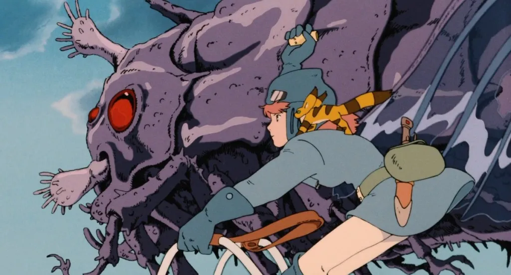

O Protagonismo Feminino nas obras do Studio Ghibli.
O Studio Ghibli é um estúdio de animação japonesa que foi fundado em 1985 por Hayao Miyazaki e Isao Takahata. Desde a sua fundação, com a sua primeira animação Castelo no Céu (1986), o estúdio vêm ganhando reconhecimento por inúmeras razões, sejam elas roteiros brilhantes, trilhas sonoras belíssimas, ou o próprio desenho. Mas outro grande motivo pelo qual o estúdio tornou-se famoso é a maneira como os papéis femininos, sejam protagonistas ou não, de suas histórias são criados.
Uma das motivações pelas quais resolvi falar sobre o assunto foi devido ao meu próprio crescimento. Eu, enquanto crescia, fui influenciado por diversas animações e filmes considerados infantis e adolescentes e, na sua grande maioria, os entretenimentos aos quais eu tinha acesso não criavam figuras femininas que fossem relevantes, fortes, e, principalmente, independentes. E isso acabou influenciando diretamente sobre como eu me enxergava diante da sociedade, acreditando que eu não possuía a mesma inteligência e o mesmo valor que os meus colegas homens, algo que eu já mencionei em vários textos já publicados.
A representatividade, nesse sentido, mostra-se tão intensiva na nossa formação intelectual que o The Atlantic, uma revista de Boston, nos Estados Unidos, publicou um estudo que reflete sobre como garotas de apenas 6 anos pensam sobre sua própria inteligência. Estas garotas já se sentem “menos inteligentes” que os meninos com quem dividem classe e, apesar do texto não colocar uma razão direta para isso, esta situação nos é colocada, principalmente, a partir da influência direta dos papéis de gênero que nos são colocados desde o nosso nascimento, isto é, dos estereótipos que a geniosidade e a inteligência em si são características masculinas. E porque eu estou falando sobre isso no momento? Pois as personagens do Studio Ghibli invertem completamente os papéis que nos são naturalmente colocados no cinema, e principalmente em filmes infantis e adolescentes. (Para deixar claro, tenho o conhecimento de que os estúdios que produzem este gênero estão evoluindo e criando papéis femininos maravilhosos, inclusive houveram alguns mesmo na época de meu crescimento, como Mulan e Lilo & Stitch, entretanto, infelizmente, não era essa a regra.)
O Hayao Miyazaki, conhecido diretor, fundador do estúdio, fora diversas vezes questionado do porquê da sua preferência por papéis principais femininos que possuíam personalidade forte e independente, e um fato engraçado é de que ele não gosta muito de falar sobre isso, talvez porque isto lhe fosse perguntado muito, e essa circunstância me é curiosa por conta da forma que as animações causavam essa singularidade, essa estranheza ao ver que personagens tão incríveis estavam sendo criadas numa época como os anos 80 e 90 (Se atualmente, quando essas sujeitas são criadas e colocadas em universos cinematográficos, como em Star Wars, há o questionamento constante sobre o porquê ou qual a necessidade de elas serem criadas, imaginem nessa época).
As personagens femininas de maneira detalhada.
San, de Princesa Mononoke foi uma das primeiras animações do estúdio que tive prazer de ver. Talvez um dos longas mais extraordinários e incríveis que já vi, e diferentemente dos outros produzidos por eles, é violento e conta com um tom mais sombrio. Ele conta a história de um príncipe que é infectado por uma doença mortal, e que tem conhecimento de que irá morrer, a menos que encontre a cura. Sendo a sua última esperança, segue para o leste e, durante o caminho, encontra animais da floresta lutando contra a sua exploração, liderados pela princesa Mononoke.
Sem dúvidas, esta é a mais “feroz” das heroínas apresentadas. A menina foi criada por lobos e fará qualquer coisa para impedir que os humanos acabem com a floresta, fazendo com que a animação abra uma discussão competente e obscura sobre a nossa relação com a natureza.
E, para além disso, sua antagonista Lady Eboshi, líder da Iron Town, também é extremamente engenhosa, hábil e forte, constatando a forma fenomenal com que Miyazaki criava suas figuras, que, é capaz que nem sempre estas sejam as principais em uma trama, mas é certo que sempre possuem grande notoriedade para o desenvolver da trama, não só colocadas para encher linguiça.
Chihiro, é uma menina de dez anos que se encontra em mudança junto com a sua família. Para economizar tempo, seu pai toma um atalho, porém acabam perdidos e chegam a um túnel. Ao atravessá-lo, a família se depara com um povoado abandonado; os pais da garota encontram um restaurante e decidem comer alguns alimentos ali deixados, enquanto que a menina vai investigar o lugar. Uma vez chegada a noite, esta se aterroriza ao ver que o povoado está cheio de espíritos. Tentando encontrar seus pais, descobre que eles se transformaram em porcos. Assim, Chihiro tentará achar uma maneira de romper o feitiço e resgatar seus pais enquanto trabalha para uma ambiciosa bruxa em uma casa de banhos termais.
O longa, para mim, é uma lição de coragem e resistência. A menina, que começa bem mimada, lida com mudanças das mais drásticas, e a animação mostra de forma brilhante uma das fases mais difíceis da vida, que é a chegada da adolescência (Talvez até se encaixando em um coming-of-age rsrs). A Viagem de Chihiro é um dos filmes mais complexos e que possuem várias camadas que já vi, chegou a tocar tanto o meu coração que considero hoje um dos meus favoritos. É incrível como cada mero detalhe nos remete ao crescimento pessoal na adolescência ao e desenvolvimento da inteligência, personalidade e até mesmo da sexualidade. Além de refletir até mesmo sobre o modo de produção capitalista e a coisificação humana. Recomendo demais.
O filme Nausicaa do Vale do Vento conta uma história em que a humanidade se esforça para sobreviver em um mundo que está em ruínas, no qual nações divididas, isoladas umas das outras pelo “Mar da Corrupção” e por uma floresta tóxica com plantas e insetos gigantes. Nausicaa, nesse contexto, é a princesa de um pequeno reino chamado Vale do Vento, que tenta compreender melhor estas florestas nocivas aos humanos, ao mesmo tempo que tenta, de todas as formas, impedir que duas nações entrem em guerra e se destruam em um planeta agonizante. Princesa Nausicaa é uma líder por natureza, que não mede esforços para salvar seu povo, mesmo com sacrifício.
Como se não bastasse a figura de Nausicaa, assim como Princesa Mononoke, o longa também conta com outras personagens femininas fortes, com falas relevantes e que influenciam diretamente no roteiro, como a Anciã e a antagonista Kushana, que merecem grande destaque.
A obra narra a trajetória de Shizuku Tsukishima, uma estudante de 14 anos que leva uma vida simples e nutre um profundo amor pela literatura, passando a maior parte de seu tempo livre lendo na biblioteca. Durante suas visitas à biblioteca, ela descobre que todos os livros que já pegou foram previamente retirados por uma pessoa chamada Seiji Amasawa.
Ao conhecer um garoto que inicialmente a irrita, Shizuku descobre que ele é o “Príncipe dos Livros”. À medida que os dois se aproximam, ele compartilha seu sonho de fabricar violinos na Itália, fazendo Shizuku questionar seus próprios objetivos e a falta de ambição em sua vida. Impulsionada pelo seu amor pela literatura, ela testa suas habilidades de escrita e começa a criar uma história envolvendo Baron, uma estátua de gato que pertence ao avô de Seiji.

É emocionante acompanhar a jornada de autodescoberta de uma jovem, desde as incertezas sobre suas habilidades até a ansiedade pela aprovação dos outros. Sussurros do Coração trata do amor, mas não se restringe ao amor romântico; é sobre a autodescoberta e as paixões individuais.
A adolescência pode ser uma fase frustrante, mas também é o período de maior aprendizado sobre a própria identidade. À medida que Shizuku encontra sua paixão, o espectador também é inspirado a explorar seus próprios interesses e paixões.
Existem vários pequenos detalhes que me fazem amar bastante essa narrativa, um deles é que todos os personagens me parecem bem interessantes, na perspectiva de que todos eles parecem reais, palpáveis, até mesmo com o gato falante você consegue relacionar com coisas do seu mundo. Além disso, Kiki pode ser uma bruxa, mas acima de tudo ela ainda é humana e isso a torna uma personagem real, forte, sendo demonstrado através de como ela lida com sua nova realidade, e até mesmo, a partir do silêncio (coisa que o Miyazaki sabe trabalhar bem) nós podemos sentir tudo o que ela está sentindo, refletindo sobre solidão, dificuldades e amizade.
O incentivo a personagens femininas fortes e independentes é uma forma de valorizar a feminilidade e a identidade das mulheres na sociedade. À medida que vemos representações mais justas e autênticas de mulheres em filmes e séries, as meninas se reconhecem como indivíduos capazes e significativos.
Todas as personagens do Studio Ghibli mencionadas até agora representam um marco na desconstrução dos estereótipos femininos na indústria cinematográfica. De Chihiro a Shizuku, cada uma delas contribui para questionar como as mulheres são retratadas na cultura popular e desafiar as normas do patriarcado.